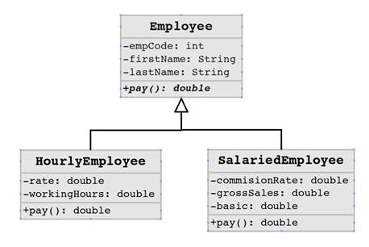

Polymorphism is the ability of an object to take on many forms. The most common use of polymorphism in OOP occurs when a parent class reference is used to refer to a child class object.
Any Java object that can pass more than one IS-A test is considered to be polymorphic. In Java, all Java objects are polymorphic since any object will pass the IS-A test for their own type and for the class Object.
It is important to know that the only possible way to access an object is through a reference variable. A reference variable can be of only one type. Once declared, the type of a reference variable cannot be changed.
The reference variable can be reassigned to other objects provided that it is not declared final. The type of the reference variable would determine the methods that it can invoke on the object.
A reference variable can refer to any object of its declared type or any subtype of its declared type. A reference variable can be declared as a class or interface type.